Hocapaşa Lokantaları Pasajı'nda.
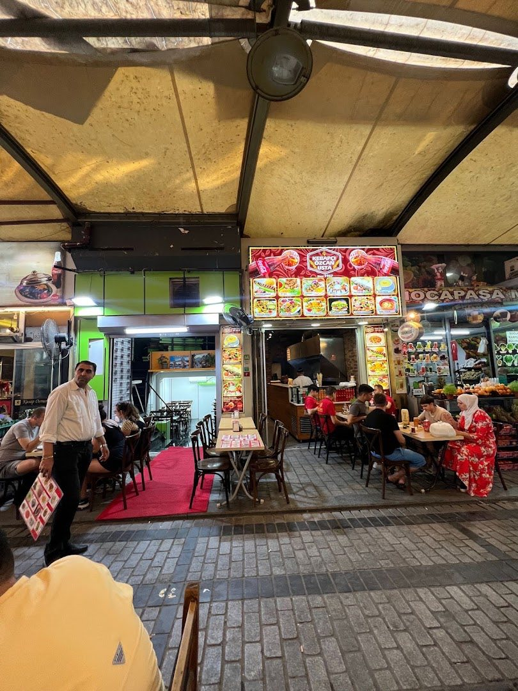
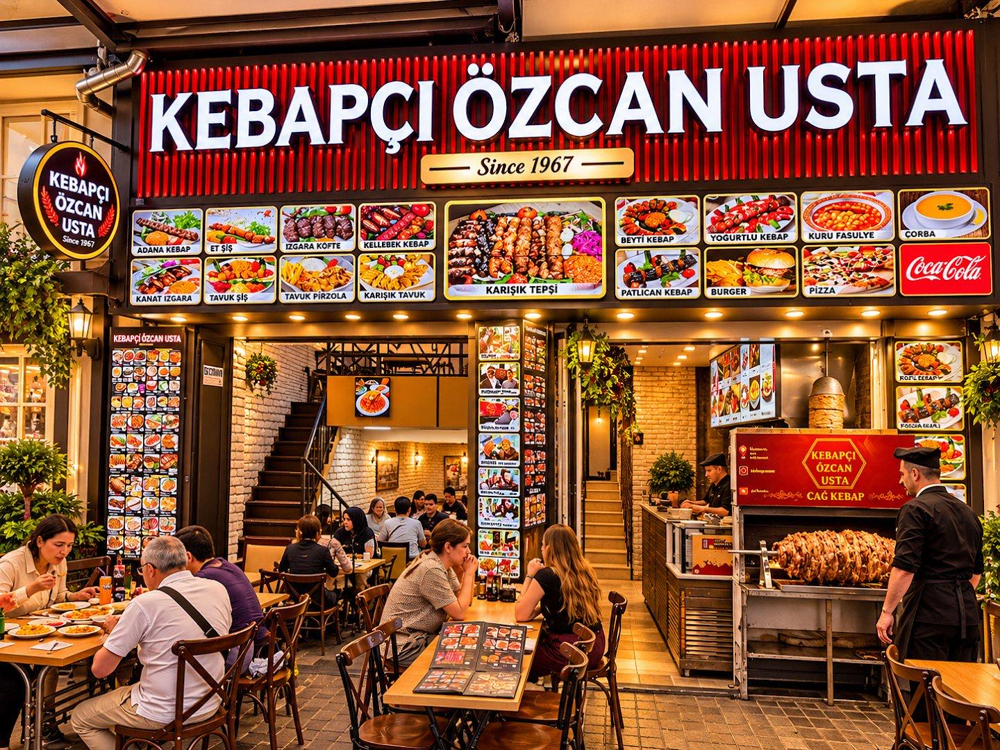
Hocapaşa Sokağı, Sirkeci
Ocakbaşı geleneği, Sirkeci'de. Her gün gece yarısına kadar.
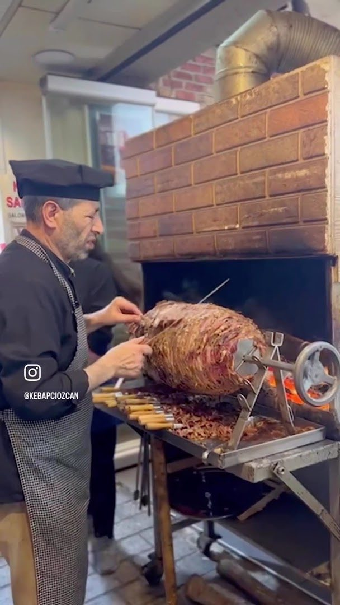
Ankara Caddesi'nden Hocapaşa Sokağı'na döndüğünüzde közün kokusu karşılar sizi. Sirkeci'nin kalabalığı birkaç adım geride kalır; masada lavaş, ocakta şişler. Öğle arasında uğrayan da, akşam ailesiyle gelen de aynı özenle ağırlanır.

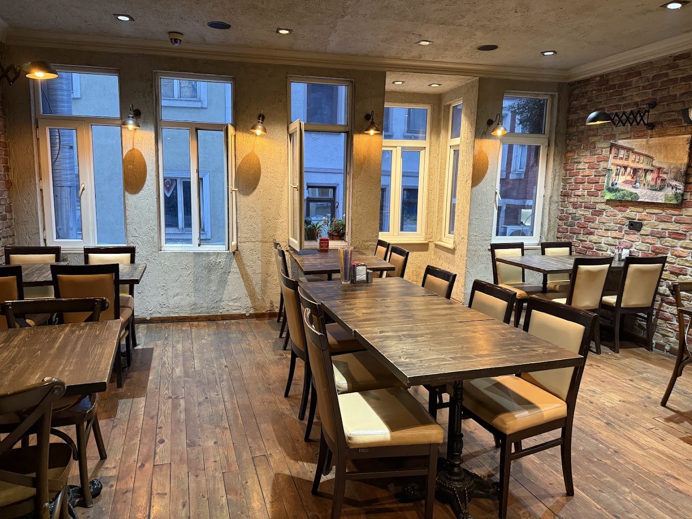
Sirkeci'de bir öğle arası ya da uzun bir akşam yemeği. Masanızı önceden ayırtın, ocak sizi beklesin.
Masanızı AyırtınHaftanın yedi günü 11:00 ile 24:00 arası açığız. Geç bir akşam yemeği için de, ertesi günün öğlesi için de masanız hazır.
Bu Akşama Masa Ayırtİstanbul saati
--:--
Saat hesaplanıyor
Kapanışa kalan
--:--:--
Bayramlarda saatler değişebilir; gelmeden önce arayabilirsiniz.
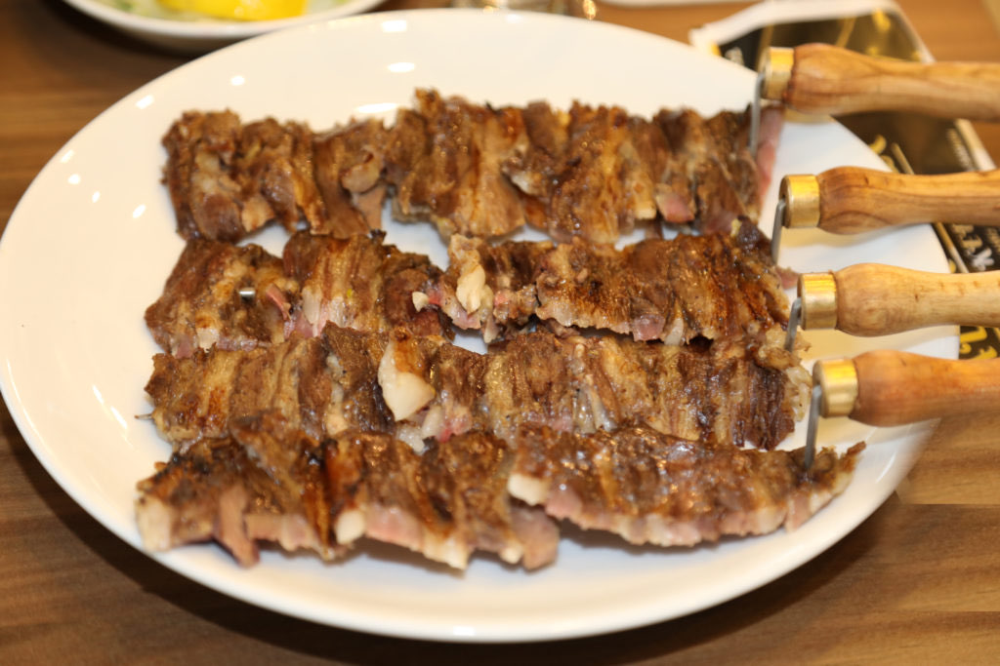
Yatay şişte közün önünde döner, ince dilimlenip şişiyle tabağa gelir.

İnce döner, pide ve domates sosu. Yanında yoğurt.
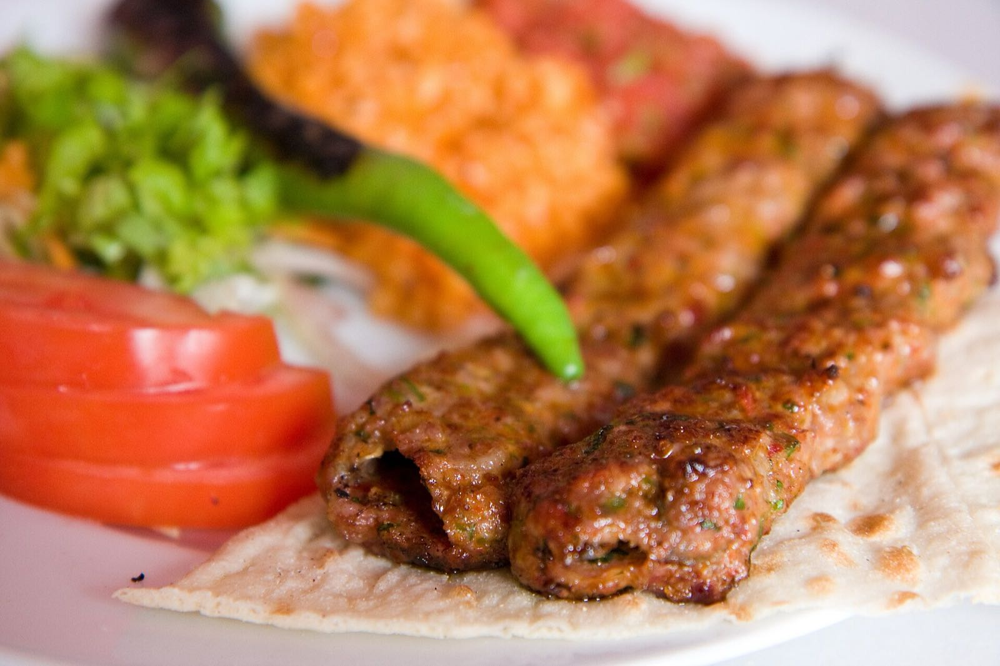
Közde pişen acılı kıyma; bulgur pilavı ve közlenmiş biberle.
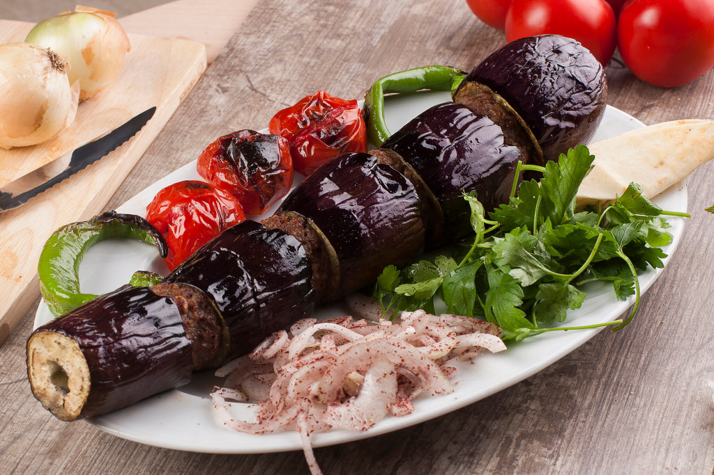
Patlıcan ve kıyma aynı şişte, közde birlikte pişer.
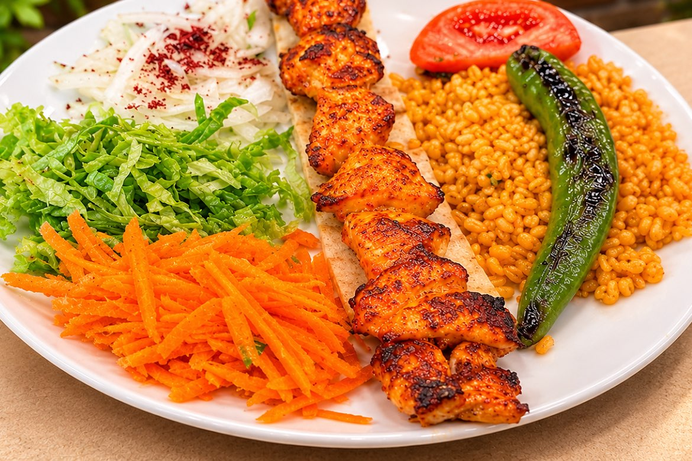
Közde pişen tavuk; bulgur pilavı, salata ve közlenmiş biberle.
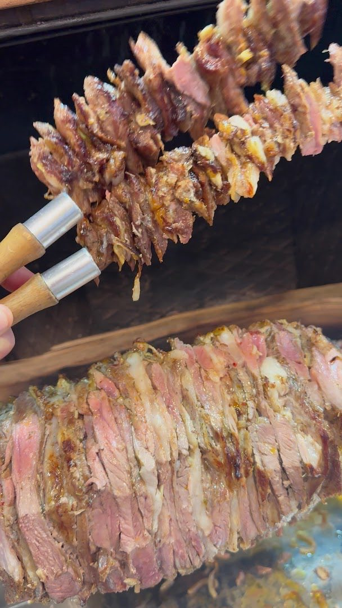
Erzurum'un yatay şişte pişen kebabı. Et, şişte közün karşısında döner; dış yüzü kızardıkça ince dilimlenir ve küçük şişlere dizilerek sofraya gelir. Tabelamızda da, ocağımızda da ilk sırada.
Çağ Kebap İçin Masa Ayırt4,8
Google'da 3.546 yorum
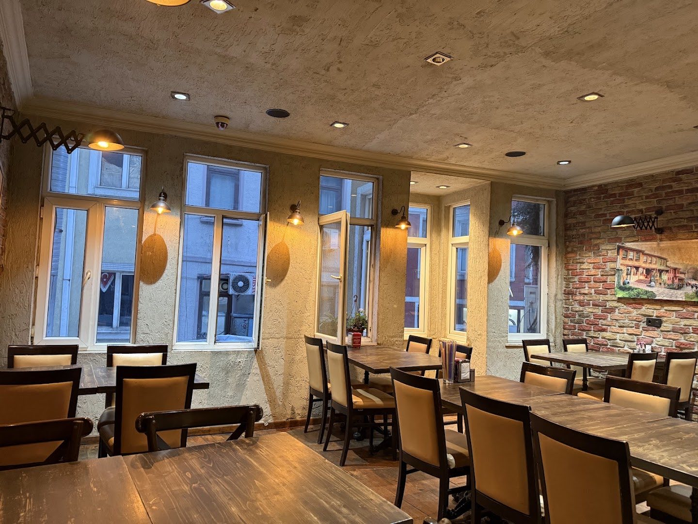
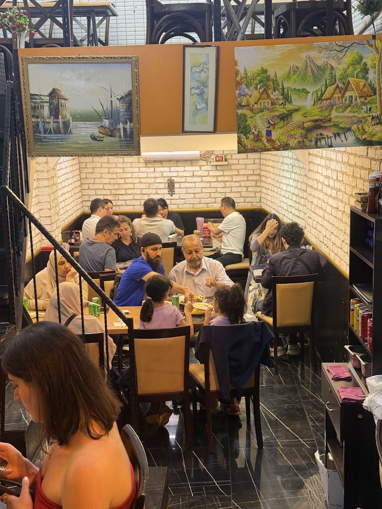
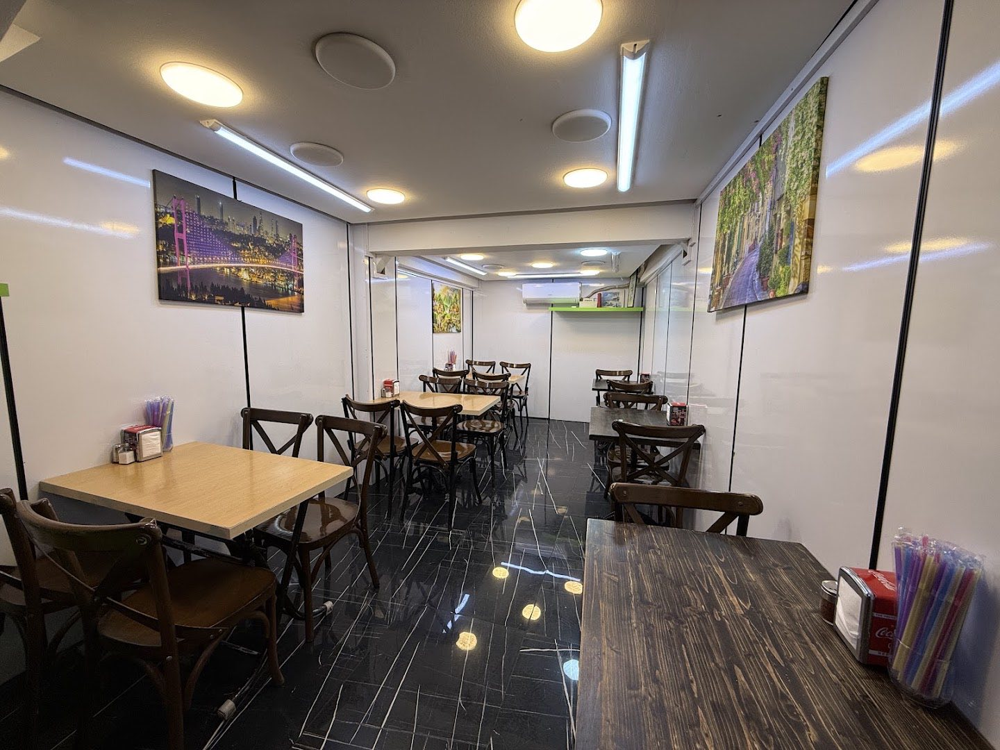
Gerekmez. Kalabalık geliyorsanız formdan masa ayırtmanızı ya da aramanızı öneririz.
Haftanın her günü 11:00 ile 24:00 arası açığız. Bayramlarda saatler değişebilir; gelmeden önce aramanızı öneririz.
T1 tramvayın Sirkeci durağına ve Marmaray Sirkeci istasyonuna birkaç dakikalık yürüme mesafesindeyiz. Adresimiz Ankara Caddesi, Hocapaşa Camii Sokağı No:6.
Formu doldurun, sizi arayıp rezervasyonunuzu onaylayalım. Beklemek istemiyorsanız doğrudan arayın.
0212 527 00 27 Ankara Cad., Hocapaşa Camii Sok. No:6, Fatih